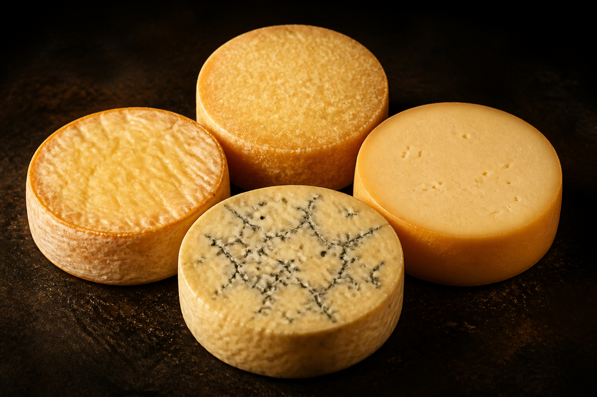

When Essendon, Hawthorn, Carlton & Geelong all win the same round

Matt (Essendon), Brett (Carlton), Tim (Hawthorn) and Johno (Geelong) — when all four clubs play and win in the same round, it's a Quattro Formaggi.
Rounds where any of the four don't play are excluded. History from Squiggle (last twenty seasons); crowd figures from AFL Tables. Ladder position is from the week before each game (rounds 1–3 use the prior season's final ladder).